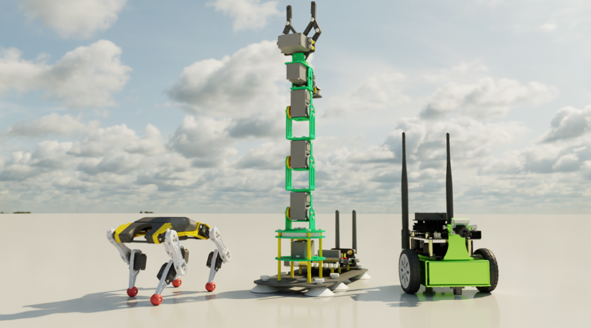
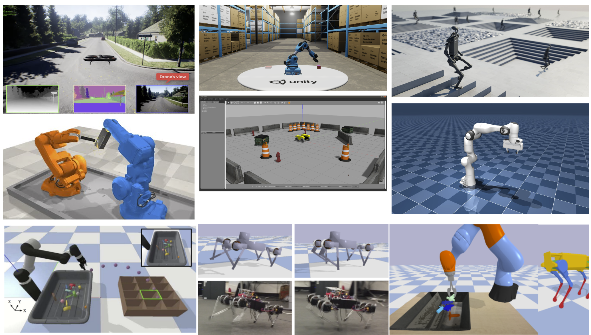
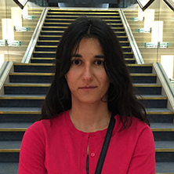
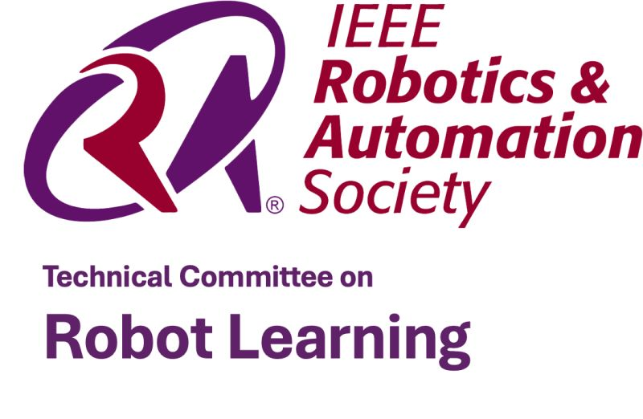
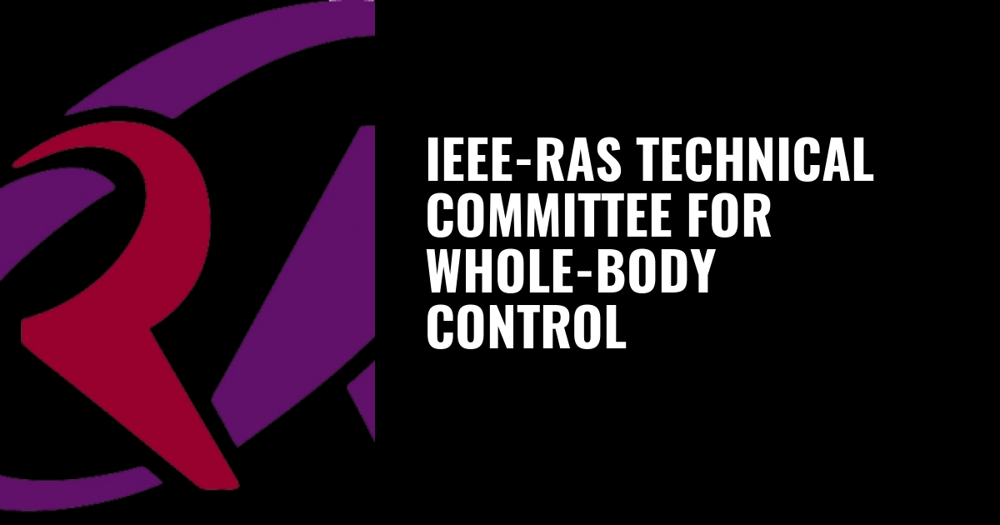

Join our workshop to explore state-of-the-art and new research methodologies at the edge between control and sim-to-real transfer.
Simulation has long been a valuable tool for robotics, but its role is fundamentally shifting. Simulators are now integrated components of deployment pipelines, not merely prototyping aids. This shift, embodied in sim-to-real transfer, is rapidly redefining how robots are designed and validated at scale.
Yet the simulation-reality gap remains one of the most unsolved problems in modern robotics. The community is responding by exploiting real-world data to refine simulators through real-to-sim techniques. Together, sim-to-real and real-to-sim form a closed-loop framework that extends the classical foundations of system identification and adaptive control , fields with decades of rigorous theory that both communities have every reason to build upon. Two forms of fragmentation currently limit collective progress. First, model-driven and data-driven researchers often work in isolation. Second, system identification, adaptive control, and sim-to-real are treated as competing paradigms rather than complementary instruments facing the same problem.
In this context, this full-day workshop makes a targeted intervention across IROS’s core tracks, namely control, learning, and perception, with four concrete objectives: first, consolidate fragmented knowledge across communities; second, align research directions between control and learning communities; third, facilitate translation of academic advances into real-world deployment, and fourth, promoting inter-generational exchange between speakers from academia and industry, students, early-career researchers, and engineers.
Unlike prior events that have addressed sim-to-real at the application layer, this workshop treats it as a foundational methodological problem approached through the lens of control theory, a framing that so far has remained absent from the conference landscape.


We welcome contributions (extended versions of existing work, work in progress / early-stage ideas, submissions under review elsewhere, recent results published elsewhere) across a wide range of topics, including (but not limited to)::
In addition to research papers, we also welcome videos and presentations on relevant topics.
All submissions will undergo a rigorous peer review, with at least two high-quality reviews per paper. Selected papers will be presented as posters at the workshop, and outstanding contributions will be selected for presentations.
To recognize excellence, we are introducing a PAL-funded Best Paper Award (€300).
Preferred Method (Open Review): Submit electronically via the Submission Portal
Link: Open Review
Alternative Method (Email): If you encounter insurmountable technical issues with Google Form, you may submit via email to sim2realgap.iros26@gmail.com.
⚠️ Please note: Submissions must follow the IROS format guidelines and be limited to either two or four pages, with the page count excluding references.
Have a question for one of the speakers at the Sim2Real & Classical Control Workshop (S2RCC 2026)?
You may submit questions related to talks. Selected questions may be addressed during or after the sessions.
For questions related to paper submissions or reviews, please contact us via email at sim2realgap.iros26@gmail.com .
Ask a QuestionArizona State University, Tempe, USA
NVIDIA Research
Technical University of Munich, Munich, Germany

Carnegie Mellon University, Pittsburgh, USA
Beijing Institute for General Artificial Intelligence, Beijing, China
Norwegian University of Science and Technology, Trondheim, Norway
PAL Robotics
Toyota Research Institute
IDSIA-SUPSI, Lugano, Switzerland
University of Salerno, Italy
Sorbonne University, Paris, France
Sorbonne University, Paris, France
PAL Robotics, Barcelona, Spain
Sorbonne University, Paris, France
University of Salerno, Salerno, Italy
PAL Robotics, Barcelona, Spain
Carnegie Mellon University, Pittsburgh, USA
Bosch Center for AI, Carnegie Mellon University, Pittsburgh, USA

IEEE RAS Technical Committee on Robot Learning

IEEE RAS Technical Committee on Whole-Body Control